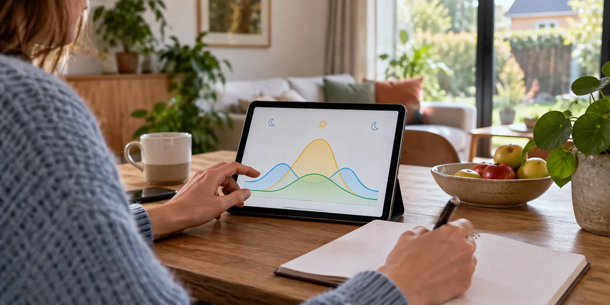

Verzamel representatieve periodes
Gebruik beschikbare metergegevens uit verschillende delen van het jaar. Fluvius maakt afname en injectie per kwartier beschikbaar. Voeg informatie toe over vakanties, thuiswerk en grote verbruikers, zodat een afwijkende week niet als standaard wordt gebruikt. Je hoeft de volledige analyse niet zelf uit te voeren om wel de juiste uitgangspunten aan te leveren.
Vraag welke gegevens ontbreken
De netmeter toont niet automatisch de volledige productie van je zonnepanelen. Bespreek welke informatie uit de omvormerapp nodig is om het beeld aan te vullen. Vraag de installateur waar schattingen worden gebruikt en hoe die het advies beïnvloeden. Een voorstel dat onzekerheden benoemt, is gemakkelijker te beoordelen dan een exact getal zonder uitleg.

Laat capaciteit en gebruik samen bespreken
Vraag waarom de voorgestelde opslag bij jouw profiel past en wat er verandert bij een kleinere variant. Bespreek ook toekomstplannen zoals een warmtepomp zonder te doen alsof die al onderdeel van het gemeten profiel zijn. Bewaar het advies naast de oorspronkelijke meetgegevens, zodat je later de aannames kunt terugvinden.
Bewaar de aannames bij het advies
Vraag de installateur kort op te schrijven welke meetperiode en ontbrekende gegevens gebruikt zijn. Laat toekomstig autoladen of elektrisch verwarmen als afzonderlijke variant tonen. Zo kun je een advies later opnieuw beoordelen wanneer je huishouden verandert. Deel alleen gegevens die voor de opdracht nodig zijn via het afgesproken kanaal. Een meetdossier bevat informatie over je dagelijkse ritme; het hoeft niet publiek op een website of in een onbeveiligde gedeelde map te staan.
Een praktisch voorbeeld
Een zonnige vakantieweek toont veel injectie, omdat je niet thuis bent. Laat die week niet als enige basis voor de batterijgrootte gebruiken. Vergelijk ook gewone werkweken en donkere periodes.
Illustratief scenario, geen klantcase.
Neem dit mee naar je gesprek
- Afname en injectie per periode
- PV-productie waar beschikbaar
- Afwijkende weken benoemd
- Huidig profiel en toekomstplannen apart
Veelgestelde vraag
Zijn zeven dagen meten altijd genoeg?
Nee. Ze kunnen een gesprek starten, maar representativiteit en seizoenen blijven belangrijk.
Bron en achtergrond
Fluvius: officiële of technische achtergrond bij dit onderwerp ↗
Geraadpleegd op 13 oktober 2026. De praktische checklist en het voorbeeld zijn redactionele uitwerkingen. Fabrikantinformatie geldt voor de beschreven producten; ze is geen algemene garantie voor andere systemen.
Wat betekent dit voor jouw woning?
Gebruik de calculator voor een eerste indicatie. Een vakman beoordeelt jouw situatie en bevestigt de uitvoering en definitieve prijs.
Bekijk de thuisbatterijcalculator →